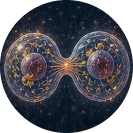

Biologiedocent die met AI lesmateriaal ontwikkelt
Ik maak uitlegfilms, lestools en oefenexamens voor havo en vwo. AI doet veel van het maakwerk. Ik bepaal de inhoud en het niveau, en gebruik het materiaal in mijn eigen lessen.

Ik maak uitlegfilms, lestools en oefenexamens voor havo en vwo. AI doet veel van het maakwerk. Ik bepaal de inhoud en het niveau, en gebruik het materiaal in mijn eigen lessen.

De kern is biologie. Daaromheen kan ik drie dingen doen.
Films, interactieve lessen, toetsen en oefenexamens, van idee tot materiaal dat ik zelf in de klas gebruik.
Hoe zet je AI in zonder dat kwaliteit, bronnen of auteursrecht wegzakken? Mijn eigen werkwijze is een uitgewerkt voorbeeld dat ik kan vertalen naar richtlijnen voor een team.
Dezelfde aanpak werkt voor mbo, hbo en Engelstalig onderwijs. Ik bereid een Engelstalige filmlijn voor.
Benieuwd hoe dit bij jullie past? Ik vertel er graag meer over.
E-mailadres en eventueel LinkedIn